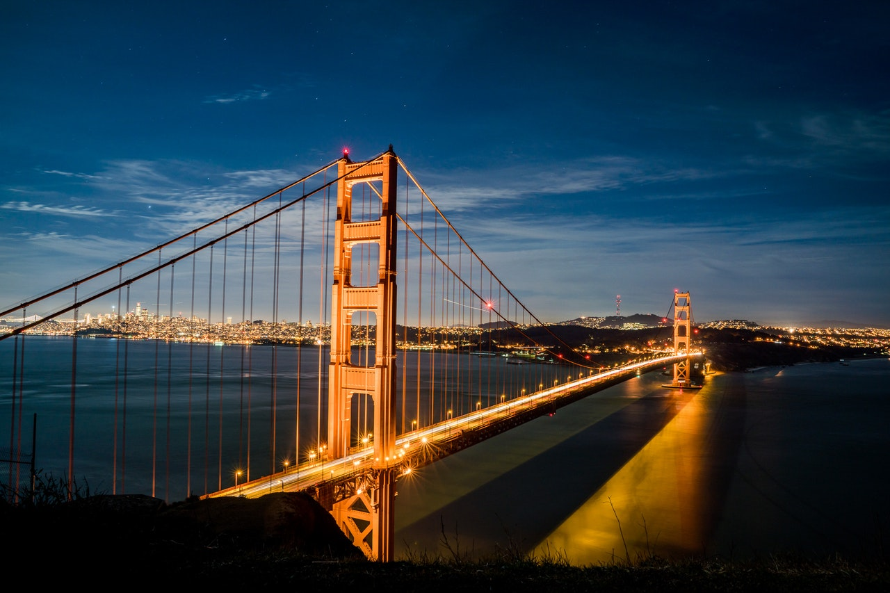

|
Le pont du Golden Gate (en anglais : Golden Gate Bridge) est un pont suspendu américain situé dans l'État de Californie, traversant le Golden Gate, détroit par lequel la baie de San Francisco débouche dans l’océan Pacifique. Il permet ainsi de relier la ville de San Francisco, située à la pointe nord de la péninsule de San Francisco, à la ville de Sausalito, située à la pointe sud de la péninsule du comté de Marin. Financée par la Work Projects Administration, sa construction, qui se heurte à de nombreuses difficultés, débute en 1933 et s’étale sur une durée de quatre ans, pour s’achever en 19371. |
|  |
Jusqu’en 1964, c'est le pont suspendu le plus long du monde et constitue au XXIe siècle le monument le plus célèbre de San Francisco. Il est en outre aisément reconnaissable à sa couleur orange international et à l’architecture de ses deux pylônes. Selon un classement de l’American Society of Civil Engineers, l'ouvrage d'art fait partie des Sept Merveilles du monde moderne. Depuis le début du XXe siècle, et plus précisément depuis la reconstruction consécutive au séisme de 1906, la ville de San Francisco connaissait une certaine prospérité, qui rendait nécessaire le développement des axes de communication, afin d’étendre les possibilités d’échanges et d’approvisionnement. San Francisco est construit au bord de l’océan Pacifique au nord d’une presqu’île bordée par le Pacifique à l’ouest, un détroit d’une largeur d’environ 2 km au nord, le Golden Gate, et la baie de San Francisco à l’est, dont la superficie oscille entre 1 0402 et 4 160 km23,selon que l’on compte ou non les criques, les estuaires et les zones humides qui la composent. |